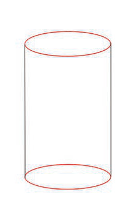

1
1 2
2 3
3
4
Activity 3
Draw the basic shapes that create a cup.
Cube and rectangular cuboid
A cube and a rectangular cuboid are similar shapes, except that a cube is shorter and a rectangular cuboid is longer. A cube shape has the appearance of a box with all four sides of the same length, while a rectangular cuboid has the appearance of a box with two shorter sides of the same length and another two longer sides of the same length. These shapes can be used as the basis for drawing different objects, like buildings.
Steps to draw a cube and a rectangular cuboid
To draw a cube shape and a rectangular cuboid, consider the following:
- Draw two overlapping cube shapes of the same size, except that one is slightly higher than the other as demonstrated in step 1 in Figure 4;
- Connect the shapes by drawing four lines that connect the four corners of one shape to the four corners of the other shape as demonstrated in step 2 and 3;